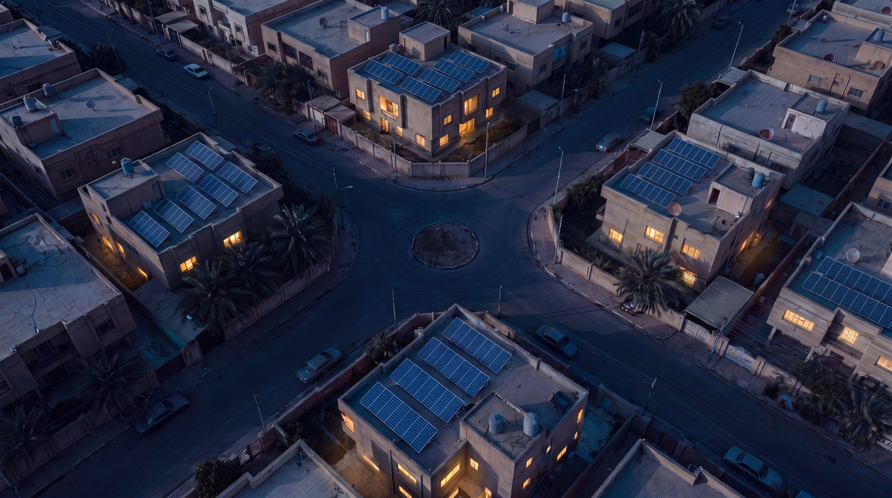

بغداد · العراق
حياتك لا تنتظر الكهرباء
بلاد أوتو — الطاقة الشمسية التي تضيء بيتك كل ليلة
احصل على عرض سعر
حرّك الماوس لتكشف القصص
المس لتكشف القصص

بلاد أوتو — الطاقة الشمسية التي تضيء بيتك كل ليلة
احصل على عرض سعر